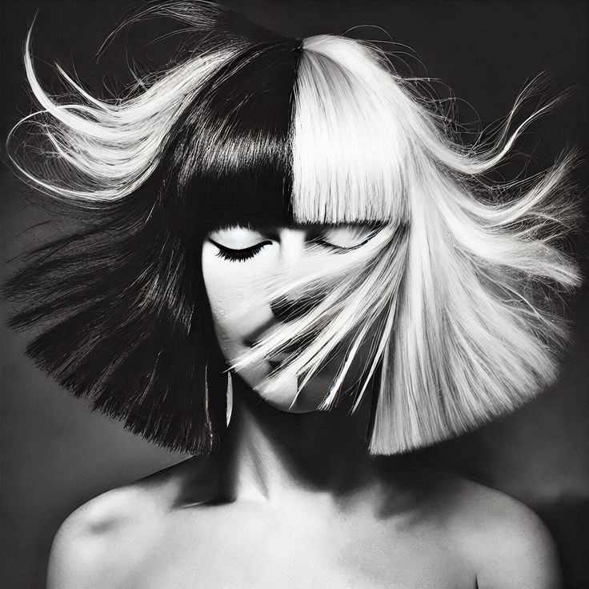

Eminem
Eminem, cuyo nombre real es Marshall Mathers, es un rapero, productor y actor estadounidense. Es considerado uno de los artistas más influyentes en la historia del hip-hop y uno de los que más discos ha vendido a nivel mundial
Adele
Adele (Adele Laurie Blue Adkins) es una cantautora británica reconocida por su poderosa voz y sus emotivas baladas. Sus canciones, a menudo inspiradas en sus propias experiencias de desamor y superación, han conectado con millones de personas en todo el mundo.
Coldplay
Chris Martin es el líder y vocalista de Coldplay. Es el principal compositor y pianista de la banda, conocido por su distintivo falsete y por escribir las emotivas letras de muchos de los mayores éxitos del grupo.

The weekend
The Weeknd (Abel Tesfaye) es un cantautor canadiense, famoso por su voz de falsete y por fusionar géneros como el R&B, el pop y el soul. Sus canciones suelen tener temas oscuros y melancólicos, y ha logrado un éxito global masivo con éxitos como "Blinding Lights".

Sia
Sia es una cantautora y directora australiana, famosa por su poderosa voz y sus éxitos globales como "Chandelier". Es también una reconocida compositora para otros artistas y es conocida por ocultar su rostro con pelucas para proteger su privacidad.
